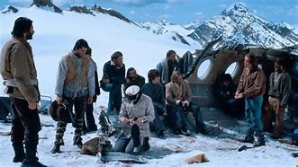
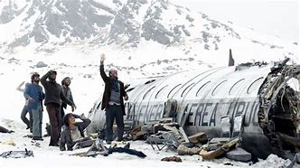
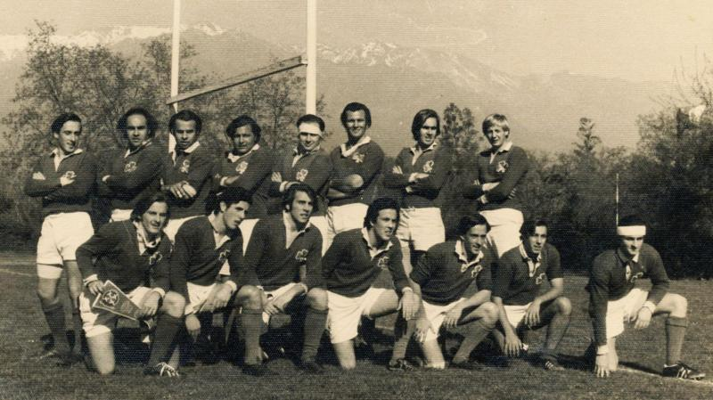
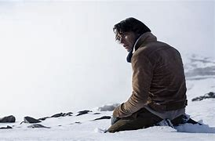
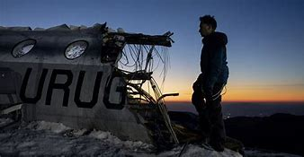
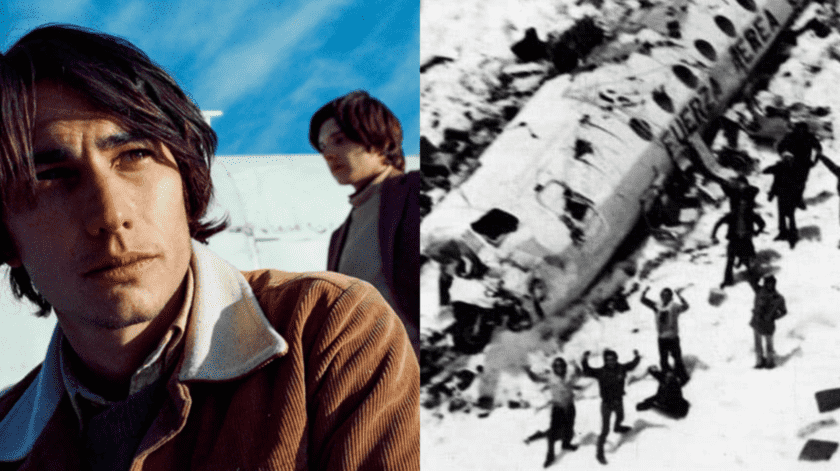

EXPERIENCIA DE SUPERVIVENCIA
El relato narra la experiencia real de un grupo de jóvenes uruguayos que, en 1972, quedaron atrapados en la cordillera de los Andes tras un accidente de avión. Esta situación extrema los sumerge en un entorno hostil y desafiante, enfrentándolos a condiciones climáticas adversas, como temperaturas extremadamente bajas, vientos fuertes y nieve profunda. La lucha por sobrevivir en un medio ambiente tan inhóspito se convierte en el foco central de la narrativa, destacando la resistencia física y mental necesaria para enfrentar estas condiciones extremas durante semanas.


COOPERANCIÒN
A medida que pasan los días y las condiciones empeoran, los sobrevivientes se ven obligados a unirse y colaborar para aumentar sus posibilidades de supervivencia. La solidaridad emerge como un tema fundamental, ya que los individuos comparten recursos limitados, como alimentos, ropa y refugio, y trabajan juntos en la búsqueda de soluciones creativas para sobrevivir. Este sentido de comunidad y apoyo mutuo se vuelve esencial para mantener la moral y la esperanza en medio de la adversidad.

ÈTICA Y DILEMAS MORALES
Uno de los aspectos más impactantes del relato es el dilema moral al que se enfrentan los sobrevivientes cuando se ven obligados a recurrir al canibalismo para alimentarse. Esta situación extrema plantea profundas preguntas éticas y morales sobre la vida, la muerte y la supervivencia, desafiando las convenciones sociales y culturales establecidas. Los sobrevivientes se ven obligados a cuestionar sus propias creencias y valores mientras luchan por reconciliar la necesidad de sobrevivir con el respeto por la dignidad humana y el tabú cultural del canibalismo.

RESILENCIA
A pesar de los desafíos abrumadores y los dilemas éticos, los sobrevivientes muestran una notable resiliencia y determinación para sobrevivir. A través del coraje, la fortaleza mental y la esperanza, continúan luchando incluso cuando parece que todas las probabilidades están en su contra. La narrativa destaca la capacidad del espíritu humano para encontrar esperanza y significado incluso en las circunstancias más desesperadas, inspirando a otros a enfrentar sus propios desafíos con valentía y determinación.

LECCIONES DE VIDA
Más allá de la historia específica de supervivencia en la cordillera de los Andes, "Sociedad de la Nieve" ofrece importantes lecciones sobre la naturaleza humana y la capacidad de adaptación ante circunstancias extremas. Destaca la importancia de la perseverancia, el trabajo en equipo y la flexibilidad mental en la búsqueda de soluciones a problemas aparentemente insuperables. Además, invita a una profunda reflexión sobre la fragilidad de la vida y la importancia de valorar cada momento, recordando a los lectores la importancia de vivir con gratitud y propósito.

REFERENCIAS